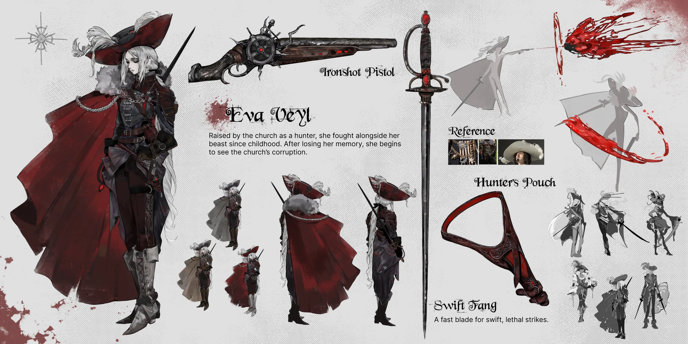
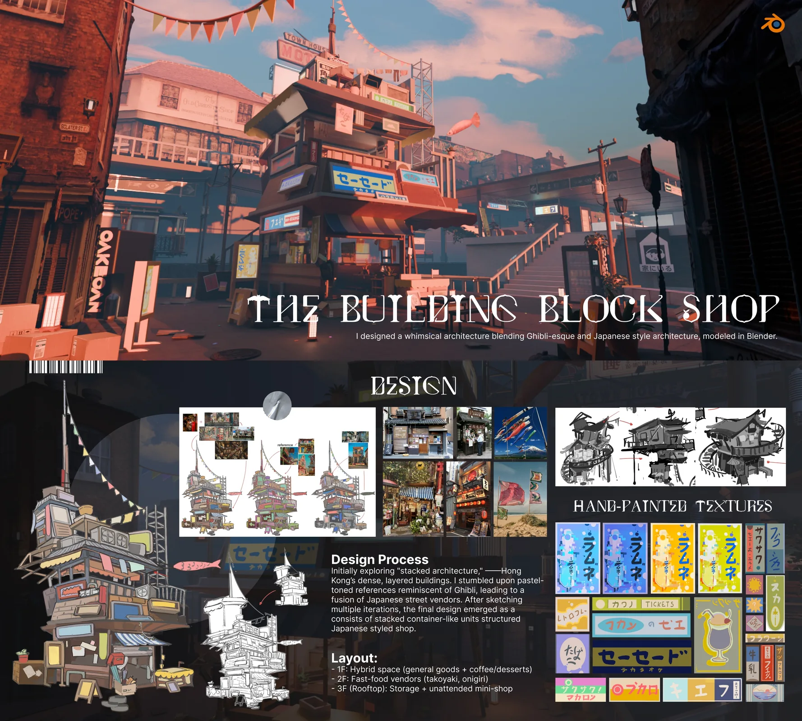
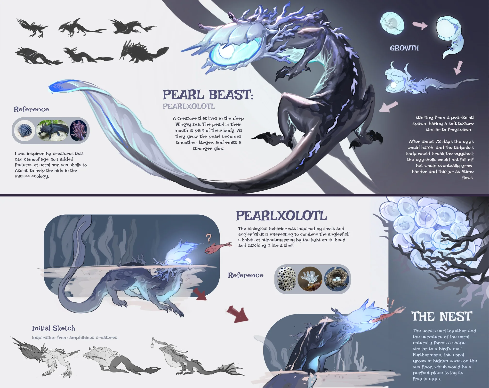
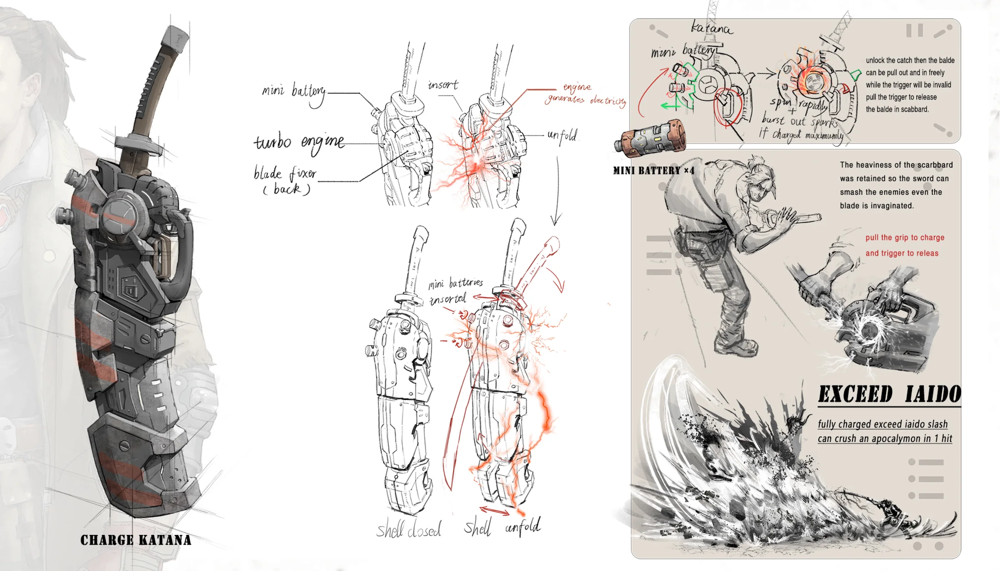

CONCEPT ART / VISUAL DEVELOPMENT
概念艺术在制作开始前，先把世界设计出来
概念艺术不是一张孤立的成品图，而是在故事成为影像之前，为未知世界寻找形态的艺术。它以角色、环境、生物与道具建立视觉秩序，使尚未存在的想象拥有尺度、气氛与生命。
CONCEPT ART / VISUAL DEVELOPMENT
概念艺术不是一张孤立的成品图，而是在故事成为影像之前，为未知世界寻找形态的艺术。它以角色、环境、生物与道具建立视觉秩序，使尚未存在的想象拥有尺度、气氛与生命。
01 / INDUSTRY & PRACTICE
概念设计师围绕剧本、世界观和制作需求展开研究，用多轮草图、形态探索、色彩方案与关键画面，寻找一个项目真正可执行的视觉方向。最终结果既要有感染力，也要回应叙事、功能、预算和生产管线。
国内常说的“原画”与这一岗位有重叠，但概念艺术更强调从问题出发的设计过程：为什么这样造型、如何支撑故事、能否被模型、动画、场景和特效团队继续完成。

CHARACTER DESIGN
从身份、性格与行动方式出发，建立轮廓、比例、服装、表情和装备系统。角色图不仅说明“长什么样”，也要解释角色如何生活、移动并进入故事。

ENVIRONMENT DESIGN
把世界观转化为空间、建筑、气候与生活痕迹。设计师通过透视草图、尺度关系和色彩气氛，确定场景怎样被观看、探索和用于叙事。

CREATURE DESIGN
在真实生物结构与虚构设定之间建立可信联系。形态、骨骼、运动方式和生存环境需要互相解释，让想象中的生物既陌生又合理。

PROP & VEHICLE DESIGN
将工业设计思维带入娱乐内容，处理结构、功能、材质和使用方式。成熟方案要能够被后续三维团队理解，并在世界观中显得自然可信。
02 / FOUNDATIONAL ABILITIES
软件只是执行工具。真正决定方案质量的，是观察、设计、验证和沟通能否形成连续的工作方法。
DRAWING & FORM
用速写、透视、解剖和结构训练快速说明形体。重点不是单张完成度，而是能否稳定地提出并比较多种视觉方案。
观察速写 · 人体与动物解剖 · 透视 · 结构塑造COLOR & COMPOSITION
组织视觉信息、镜头焦点和情绪节奏，使设计能够进入叙事。色彩既塑造氛围，也承担材质、空间和时间信息。
明度结构 · 色彩脚本 · 镜头语言 · 光影叙事2D / 3D WORKFLOW
使用三维草模验证透视、空间和复杂结构，再以绘画完成设计表达。三维不是替代绘画，而是让方案更快、更准确地迭代。
数字绘画 · 3D Blockout · 雕刻 · 渲染与合成COMMUNICATION
理解需求、呈现依据、接收反馈并调整方案。概念艺术处在多工种协作的前端，清晰表达设计逻辑与取舍同样重要。
研究与提案 · 设计说明 · 反馈迭代 · 团队协作03 / TWO ANCHOR PROGRAMMES
ArtCenter College of Design 与 Teesside University 是全球概念设计教育中极具代表性的两所院校。前者将概念设计置于娱乐设计体系中，强调造型基础、设计方法与世界构建；后者以独立的概念艺术专业贯通传统绘画、数字工具、行业命题与作品集实践。
娱乐设计 BS · Concept Design Track
Concept Design Track 将插画与工业设计方法结合。学习从透视、人体、光色和数字绘画出发，逐步进入角色、建筑、Production Design 与 World Building，并通过跨专业项目理解动画、游戏和影视制作中的协作关系。
Concept Art BA (Hons) / Concept Art MA
本科课程覆盖前期设计、叙事艺术、数字绘画、二维与三维结合、团队提案和个人项目；硕士课程进一步聚焦角色设计、视觉叙事、实践研究与大型作品集项目。学习内容直接围绕概念艺术在影视、动画、游戏和其他视觉媒体中的工作方式展开。
04 / SCHOOL DIRECTORY
推荐不按排名先后排列。由于概念艺术可能隶属于娱乐设计、游戏美术、漫画或数字艺术，比较课程时应继续核对课程结构、作品集要求与个人创作方向。
娱乐设计 BS · Concept Design Track
设计方法 / 世界观 / 视觉叙事Entertainment Design BFA · Concept Development
概念开发 / 主题娱乐 / 视觉开发Game and Entertainment Design BFA
娱乐设计 / 游戏美术 / 项目实践Concept Art BA (Hons)
前期设计 / 数字绘画 / 2D与3D工作流Comics and Concept Art BA (Hons)
视觉叙事 / 漫画 / 概念艺术Concept Art for Games and Film BA (Hons)
游戏与影视 / 数字绘画 / 三维辅助Comic & Concept Art BA (Hons)
世界观 / 角色创作 / 作者表达Computer Arts BA (Hons)
游戏美术 / 数字制作 / 团队项目Concept Art MA
角色设计 / 视觉叙事 / 实践研究Computer Games: Art & Design MA
游戏艺术 / 设计研究 / 实验实践Games Art and Design MA
游戏美术 / 专业方向 / 作品集项目Game Development MFA · Concept Art emphasis
概念美术 / 游戏制作 / 专业作品集注：课程名称、方向与模块可能调整，申请时请以院校官网当年信息为准。